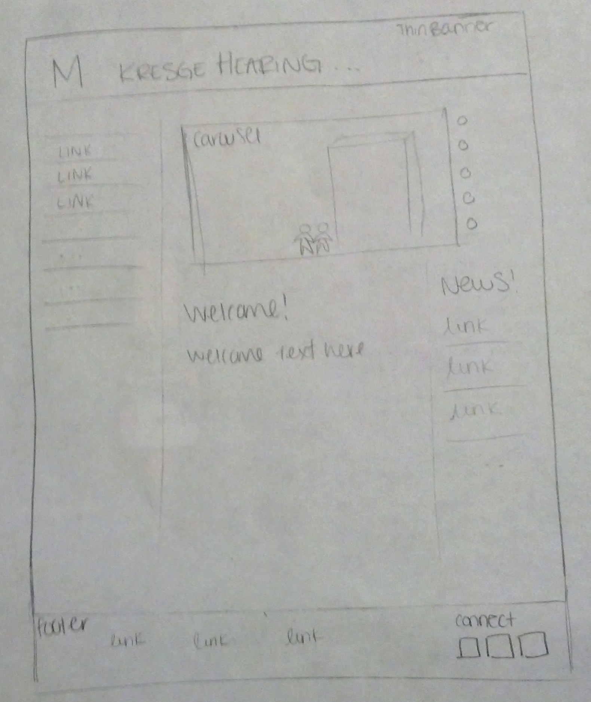
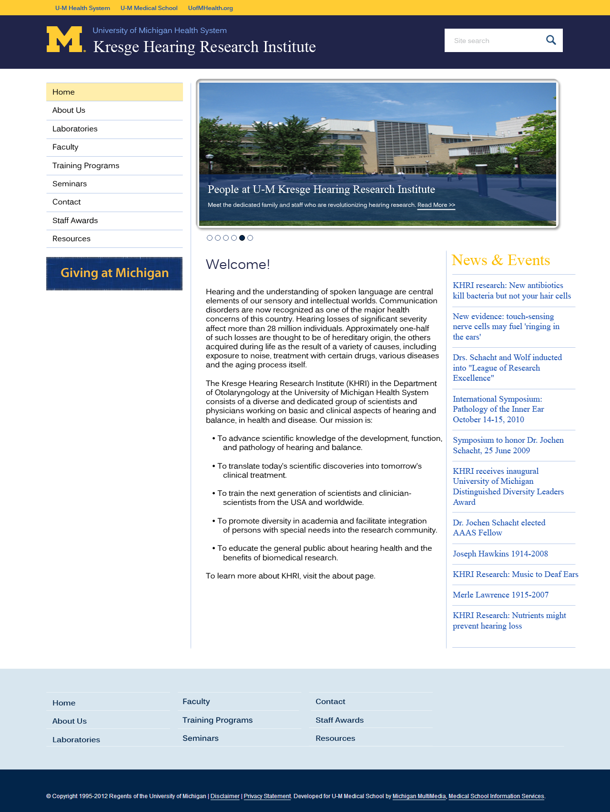
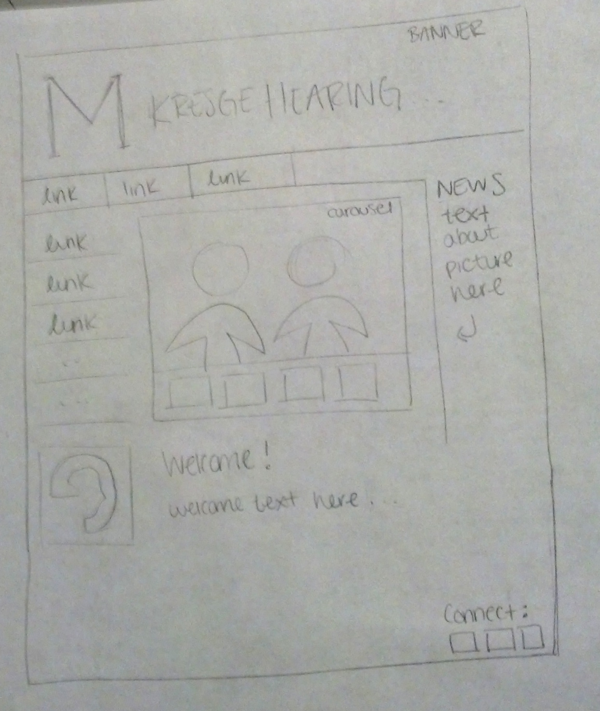
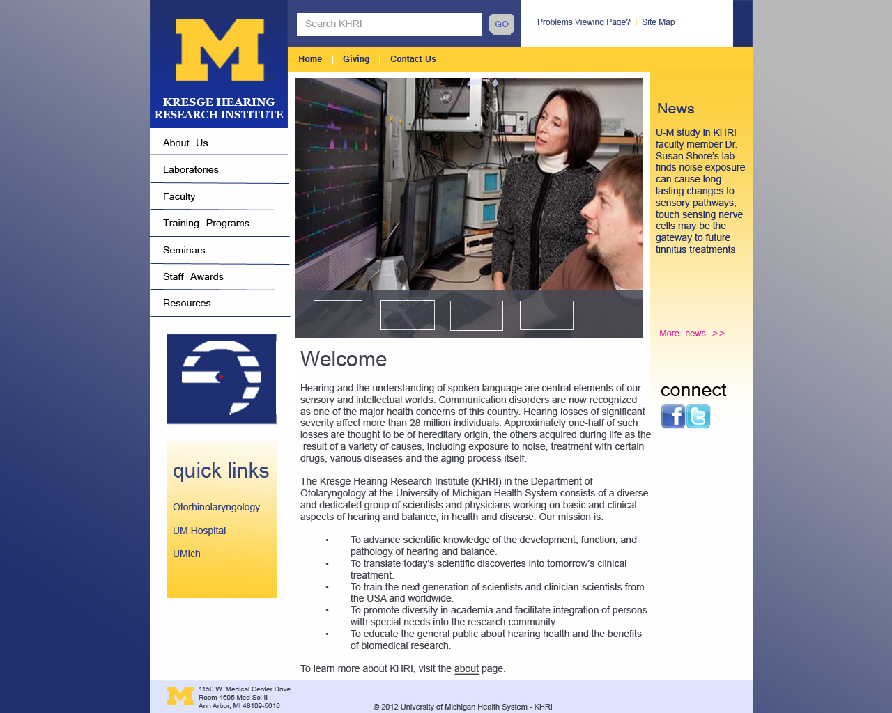
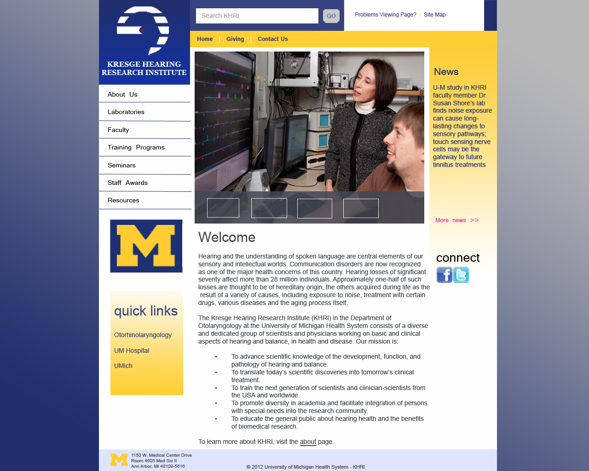

The Kresge Hearing Research Institute website redesign was a project I worked on during a portion of my 2 year work-study at KHRI. The project was to find inspiration in other university websites, and design mockups for a more modern KHRI website. The new website has not yet been implemented.
Role Description
My role was to find websites that we could use to model the new KHRI site. Then, I was to create basic mockups of the redesigns in Photoshop and iterate on those mockups.
Process
I began by finding sites that I liked. I, then, sketched the redesigns before transferring them into digital prototypes.Following are two of the designs I created.
 
  